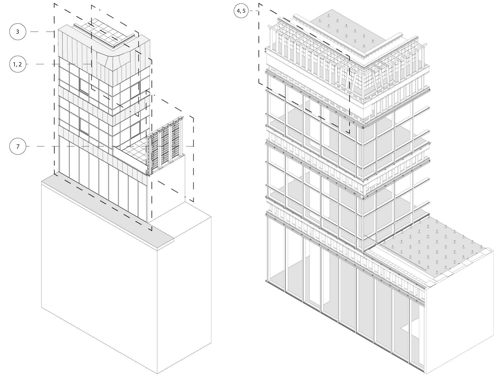
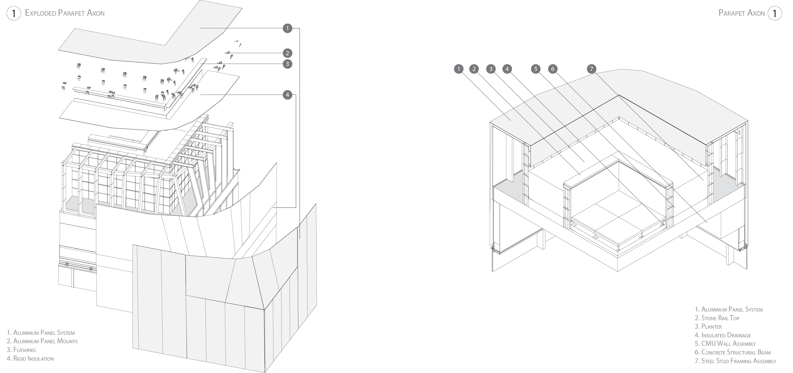
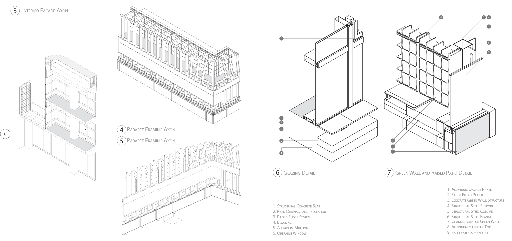

Construction Technology II
Reconstructing NMDA's 9000 Wilshire Project
Laudeman, Sara M
ARCH 8833 - CII | Spring 2019 | Georgia Institute of Technology
This project is a reconstruction of drawings of NMDA ’s 9000 Wilshire project in order to understand construction methods and drawing techniques. Drawings were done primarily in Revit, with fine detail work modeled in Rhinoceros and imported. The intention of this project is to demonstrate a working understanding of construction assemblies and showcase skilled use of Revit. The Georgia Institute of Technology was provided with a set of construction documents for the project, which was the primary reference for reconstructing this fragment of the overall building. These drawings are selected from the larger set of drawings produced.


